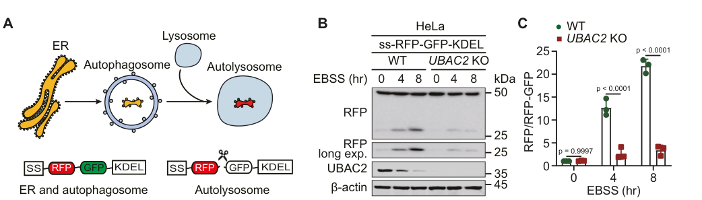

UBAC2 (ubiquitin-associated domain-containing protein 2, also PHGDHL1) is a multi-pass endoplasmic reticulum (ER) membrane protein of the rhomboid superfamily. Its N-terminal region adopts a rhomboid-like fold but is a catalytically inactive pseudoprotease (it lacks the conserved serine-protease catalytic dyad), and its C-terminal cytoplasmic UBA domain binds ubiquitin. UBAC2 acts as an ER-membrane scaffolding/adaptor component rather than an enzyme. It partners the active rhomboid protease RHBDD1 in the ER-associated degradation (ERAD) of membrane substrates, where its UBA domain engages ubiquitinated clients. UBAC2 is also the ER receptor that binds FAF2/UBXD8 and restricts FAF2 trafficking from the ER to lipid droplets, thereby modulating ER-to-cytosol dislocation and lipid-droplet partitioning. Independently, UBAC2 serves as a selective autophagy (ER-phagy/reticulophagy) receptor; a LIR motif in its cytoplasmic domain binds the autophagosomal protein GABARAP, and MARK2-mediated phosphorylation at Ser223 promotes UBAC2 dimerization and GABARAP binding to drive ER-phagy, which in turn restrains ER-stress-induced inflammatory responses. In a complex with LMBR1L and the E3 ubiquitin ligase AMFR, UBAC2 also negatively regulates canonical Wnt/beta-catenin signaling in lymphocytes by promoting degradation of CTNNB1 and the Wnt receptors FZD6 and LRP6.
| GO Term | Evidence | Action | Reason |
|---|---|---|---|
|
GO:0004252
serine-type endopeptidase activity
|
IBA
GO_REF:0000033 |
REMOVE |
Summary: UBAC2 belongs to the rhomboid superfamily but is a catalytically inactive pseudoprotease; the UniProt record and ERAD literature describe it as a rhomboid pseudoprotease lacking the serine-protease catalytic dyad. This IBA is propagated from the active-rhomboid branch of the phylogenetic tree and is biologically incorrect for UBAC2.
Reason: UBAC2 is a rhomboid pseudoprotease with no protease activity; the serine-type endopeptidase activity is an over-propagated phylogenetic inference refuted on biological grounds (no catalytic residues).
Supporting Evidence:
PMID:23297223
the ER-resident rhomboid pseudoprotease UBAC2
|
|
GO:0005789
endoplasmic reticulum membrane
|
IEA
GO_REF:0000044 |
ACCEPT |
Summary: UBAC2 is a multi-pass ER membrane protein; the electronic subcellular-location assignment is consistent with direct experimental evidence.
Reason: Core compartment; UBAC2 is an integral ER membrane protein.
Supporting Evidence:
file:human/UBAC2/UBAC2-uniprot.txt
SUBCELLULAR LOCATION: Endoplasmic reticulum membrane
|
|
GO:0005515
protein binding
|
IPI
PMID:22119785 Defining human ERAD networks through an integrative mapping ... |
KEEP AS NON CORE |
Summary: ERAD-network interactome capture of the UBAC2-FAF2 interaction. The bare protein binding term is uninformative; the functional relationship is captured by the FAF2/ER-receptor annotations.
Reason: Real ERAD-network interaction (FAF2) but uninformative GO term.
Supporting Evidence:
file:human/UBAC2/UBAC2-uniprot.txt
Q8NBM4; Q96CS3: FAF2
|
|
GO:0005515
protein binding
|
IPI
PMID:25416956 A proteome-scale map of the human interactome network. |
KEEP AS NON CORE |
Summary: Proteome-scale interactome capture (CALCOCO2). Bare protein binding is uninformative.
Reason: Real interaction from a large-scale interactome but uninformative GO term.
Supporting Evidence:
file:human/UBAC2/UBAC2-uniprot.txt
Q8NBM4; Q13137: CALCOCO2
|
|
GO:0005515
protein binding
|
IPI
PMID:28514442 Architecture of the human interactome defines protein commun... |
KEEP AS NON CORE |
Summary: High-throughput interactome capture of the UBAC2-FAF2 interaction. Bare protein binding is uninformative.
Reason: Real interaction (FAF2) but uninformative GO term.
Supporting Evidence:
file:human/UBAC2/UBAC2-uniprot.txt
Q8NBM4; Q96CS3: FAF2
|
|
GO:0005515
protein binding
|
IPI
PMID:40205054 Multimodal cell maps as a foundation for structural and func... |
KEEP AS NON CORE |
Summary: Multimodal cell-map interactome capture of the UBAC2-FAF2 interaction. Bare protein binding is uninformative.
Reason: Real interaction (FAF2) but uninformative GO term.
Supporting Evidence:
file:human/UBAC2/UBAC2-uniprot.txt
Q8NBM4; Q96CS3: FAF2
|
|
GO:0090090
negative regulation of canonical Wnt signaling pathway
|
IEA
GO_REF:0000107 |
ACCEPT |
Summary: Orthology-based assignment of the negative Wnt-regulation role, consistent with the experimental IMP evidence (LMBR1L/AMFR complex promotes degradation of CTNNB1 and Wnt receptors).
Reason: Correct biological process; redundant with experimental IMP evidence.
Supporting Evidence:
PMID:31073040
attenuated Wnt signaling in lymphocytes
|
|
GO:0005515
protein binding
|
IPI
PMID:39284914 ER-phagy restrains inflammatory responses through its recept... |
KEEP AS NON CORE |
Summary: IPI interactions from the ER-phagy study (including GABARAP-family/autophagy partners). Bare protein binding is uninformative; the GABARAP binding underpins the ER-phagy receptor function captured by the reticulophagy annotation.
Reason: Real autophagy-partner interactions but uninformative GO term.
Supporting Evidence:
PMID:39284914
binds to autophagosomal GABARAP
|
|
GO:0050728
negative regulation of inflammatory response
|
IMP
PMID:39284914 ER-phagy restrains inflammatory responses through its recept... |
ACCEPT |
Summary: By driving ER-phagy, UBAC2 restrains ER-stress-induced inflammatory responses and acute colitis in mice; perturbation of UBAC2 alters the inflammatory response.
Reason: Directly supported (IMP); a downstream consequence of UBAC2's ER-phagy receptor activity.
Supporting Evidence:
PMID:39284914
UBAC2 restrains inflammatory responses and acute ulcerative
|
|
GO:0061709
reticulophagy
|
IMP
PMID:39284914 ER-phagy restrains inflammatory responses through its recept... |
ACCEPT |
Summary: UBAC2 is a selective ER-phagy (reticulophagy) receptor with a LIR motif that binds GABARAP; MARK2-mediated Ser223 phosphorylation drives dimerization and GABARAP binding to mediate selective ER degradation.
Reason: Directly demonstrated core biological process; UBAC2 functions as an ER-phagy receptor.
Supporting Evidence:
PMID:39284914
we identified ubiquitin-associated domain-containing protein 2 (UBAC2) as a receptor for ER-phagy
|
|
GO:0005515
protein binding
|
IPI
PMID:31073040 LMBR1L regulates lymphopoiesis through Wnt/β-catenin signali... |
KEEP AS NON CORE |
Summary: IPI capture of the UBAC2-LMBR1L interaction. Bare protein binding is uninformative; the functional cooperation is captured by the negative Wnt-regulation annotation.
Reason: Real interaction (LMBR1L) but uninformative GO term.
Supporting Evidence:
file:human/UBAC2/UBAC2-uniprot.txt
Interacts with LMBR1L
|
|
GO:0090090
negative regulation of canonical Wnt signaling pathway
|
IMP
PMID:31073040 LMBR1L regulates lymphopoiesis through Wnt/β-catenin signali... |
ACCEPT |
Summary: With LMBR1L and AMFR, UBAC2 negatively regulates canonical Wnt signaling in lymphocytes by promoting ubiquitin-mediated degradation of CTNNB1 and the Wnt receptors FZD6 and LRP6.
Reason: Directly supported (IMP) biological process; a distinct UBAC2 regulatory role.
Supporting Evidence:
PMID:31073040
attenuated Wnt signaling in lymphocytes
|
|
GO:1904153
negative regulation of retrograde protein transport, ER to cytosol
|
IMP
PMID:25660456 Identification of ERAD components essential for dislocation ... |
ACCEPT |
Summary: UBAC2 negatively regulates ER-to-cytosol dislocation/retrotranslocation, consistent with its role as the ER receptor that restricts FAF2/UBXD8 trafficking and modulates ERAD substrate dislocation.
Reason: Directly supported (IMP); UBAC2 modulates the ER-to-cytosol retrotranslocation step of ERAD.
Supporting Evidence:
PMID:25660456
dislocation, also known as retrotranslocation, of those unwanted proteins from
|
|
GO:0005783
endoplasmic reticulum
|
IDA
PMID:23297223 Spatial regulation of UBXD8 and p97/VCP controls ATGL-mediat... |
ACCEPT |
Summary: Direct evidence that UBAC2 is an ER-resident protein, the compartment where it acts as an ER receptor for FAF2/UBXD8.
Reason: Core compartment; directly demonstrated.
Supporting Evidence:
PMID:23297223
the ER-resident rhomboid pseudoprotease UBAC2
|
|
GO:0070972
protein localization to endoplasmic reticulum
|
IDA
PMID:23297223 Spatial regulation of UBXD8 and p97/VCP controls ATGL-mediat... |
ACCEPT |
Summary: UBAC2 retains FAF2/UBXD8 at the ER (restricting its trafficking to lipid droplets), thereby controlling FAF2 protein localization to the ER.
Reason: Directly supported; UBAC2 acts as an ER receptor that governs partner localization at the ER.
Supporting Evidence:
PMID:23297223
restricts trafficking of UBXD8 to LDs
|
Q: Does the UBAC2 cytoplasmic UBA domain directly bind ubiquitinated ERAD substrates handed off by the active rhomboid protease RHBDD1, and what substrate range does the RHBDD1-UBAC2 module degrade?
Q: How are UBAC2's ERAD-component, FAF2 ER-receptor, ER-phagy receptor, and Wnt-regulatory activities coordinated or partitioned, and do they share the same UBAC2 pool or distinct membrane microdomains?
Experiment: Reconstitute or co-immunoprecipitate the RHBDD1-UBAC2 module and test whether UBAC2 UBA-domain mutants lose binding to ubiquitinated membrane ERAD substrates, dissociating the scaffolding role from RHBDD1 catalysis.
Experiment: Use Ser223-phospho (S223A and S223D) and LIR-motif (W275A/L278A) UBAC2 mutants in ER-phagy flux assays (RFP-GFP ER reporters) with and without ER stress to quantify the contribution of MARK2-driven dimerization to selective ER degradation.
Experiment: Perform comparative proteomics of UBAC2 interactomes under basal, ER-stress, and starvation conditions to map how its ERAD, ER-phagy, and Wnt-regulatory partner networks are remodeled.
The research report should be a detailed narrative explaining the function, biological processes, and localization of the gene product. Citations should be given for all claims.
You should prioritize authoritative reviews and primary scientific literature when conducting research. You can supplement
this with annotations you find in gene/protein databases, but these can be outdated or inaccurate.
We are specifically interested in the primary function of the gene - for enzymes, what reaction is catalyzed, and what is the substrate specificity? For transporters, what is the substrate? For structural proteins or adapters, what is the broader structural role? For signaling molecules, what is the role in the pathway.
We are interested in where in or outside the cell the gene product carries out its function.
We are also interested in the signaling or biochemical pathways in which the gene functions. We are less interested in broad pleiotropic effects, except where these elucidate the precise role.
Include evidence where possible. We are interested in both experimental evidence as well as inference from structure, evolution, or bioinformatic analysis. Precise studies should be prioritized over high-throughput, where available.
UBAC2 (UBA domain–containing protein 2; UniProt Q8NBM4; synonym PHGDHL1) encodes an ER-resident, rhomboid-like multi-pass membrane pseudoprotein with a cytosolic ubiquitin-associated (UBA) domain that has been historically linked to ER-associated degradation (ERAD) and ubiquitin-dependent protein quality control (proteostasis). (adrain2020thecomplexlife pages 15-18, kandel2020theroleof pages 10-14, lemberg2016inactiverhomboidproteins pages 16-21, choi2019lmbr1lregulateslymphopoiesis pages 1-2)
A major 2024 advance is the discovery that UBAC2 also functions as a selective autophagy receptor for ER-phagy (reticulophagy): it binds GABARAP via a cytosolic LC3-interacting region (LIR) and is activated by MARK2 phosphorylation at S223, which promotes UBAC2 dimerization and increased GABARAP binding. This UBAC2-driven ER-phagy restrains ER stress/UPR-linked inflammation and protects against DSS-induced colitis in vivo. (he2024erphagyrestrainsinflammatory pages 1-2, he2024erphagyrestrainsinflammatory pages 12-13, he2024erphagyrestrainsinflammatory pages 15-16, he2024erphagyrestrainsinflammatory pages 7-8)
“Rhomboid-like” proteins share a rhomboid fold (typically multiple transmembrane helices) but may lack protease activity; such proteins are often termed rhomboid pseudoproteases and can act as adapters/scaffolds that regulate client protein trafficking, turnover, and signaling rather than catalyzing proteolysis. Reviews place UBAC2 within this class and connect rhomboid-like factors to ER protein quality control. (lemberg2016inactiverhomboidproteins pages 16-21, adrain2020thecomplexlife pages 1-5)
UBA (ubiquitin-associated) domains are small protein modules that can bind ubiquitin or polyubiquitin chains and thereby link proteins to ubiquitin signaling and degradation pathways. Reviews specifically describe UBAC2 as having a conserved C-terminal UBA domain that binds polyubiquitin chains, consistent with an adapter role in ubiquitin-dependent quality control. (kandel2020theroleof pages 10-14, lemberg2016inactiverhomboidproteins pages 16-21)
ERAD is a canonical ER quality-control process in which misfolded or orphaned ER proteins are recognized, ubiquitinated, extracted (often via the p97/VCP machinery), and degraded by the proteasome. Reviews place UBAC2 within ERAD-related networks (including the GP78 pathway) and highlight its interactions with UBXD8/p97 axis components relevant to substrate processing. (adrain2020thecomplexlife pages 15-18, kandel2020theroleof pages 10-14, lemberg2016inactiverhomboidproteins pages 16-21)
ER-phagy is selective autophagic degradation of ER fragments. ER-phagy receptors often contain a LIR motif that binds ATG8-family proteins (e.g., GABARAP/LC3) to couple ER membranes to autophagosomes. In 2024, UBAC2 was shown to be such a receptor via its cytosolic LIR and GABARAP binding. (he2024erphagyrestrainsinflammatory pages 1-2, he2024erphagyrestrainsinflammatory pages 12-13, he2024erphagyrestrainsinflammatory pages 7-8)
The literature sources retrieved here consistently describe human UBAC2 as “ubiquitin-associated domain–containing protein 2,” and genetic studies explicitly note that PHGDHL1 is alternatively called UBAC2, supporting the UniProt synonym set and mitigating symbol ambiguity. (nan2011genomewideassociationstudy pages 1-2, hou2012replicationstudyconfirms pages 1-2)
Multiple sources place UBAC2 at the endoplasmic reticulum (ER).
A 2024 EMBO Journal study provides direct mechanistic evidence that UBAC2 is an ER-phagy receptor.
Core mechanism
* UBAC2 contains a canonical LIR in its cytosolic domain that binds GABARAP. (he2024erphagyrestrainsinflammatory pages 1-2, he2024erphagyrestrainsinflammatory pages 12-13)
* Under ER stress or autophagy activation, MARK2 phosphorylates UBAC2 at S223, promoting UBAC2 dimerization and stronger GABARAP binding, thereby enhancing ER-phagy. (he2024erphagyrestrainsinflammatory pages 1-2, he2024erphagyrestrainsinflammatory pages 12-13)
Experimental readouts and quantitative design features
* ER-phagy flux was monitored with an ER luminal reporter ss-RFP-GFP-KDEL, in which lysosomal delivery quenches GFP and yields an RFP fragment; UBAC2 knockout reduces reporter processing under starvation conditions, while UBAC2 WT rescues and a LIR mutant (LIRm) fails to rescue. (he2024erphagyrestrainsinflammatory pages 7-8)
* Quantification in microscopy includes 20 cells scored/condition and statistics reported across 3 biological replicates (mean ± SEM). (he2024erphagyrestrainsinflammatory pages 12-13)
Physiological/in vivo implications
* In a DSS acute ulcerative colitis mouse model, AAV-mediated expression of UBAC2 variants (WT vs LIRm vs S223A and disease-associated variants) was tested with n = 6 mice/group and multiple outcome measures including body weight, colon length, histology, and qPCR markers of ER stress and inflammation. (he2024erphagyrestrainsinflammatory pages 15-16)
* The study concludes that UBAC2-mediated ER-phagy restrains inflammatory responses and protects against colitis pathology. (he2024erphagyrestrainsinflammatory pages 1-2, he2024erphagyrestrainsinflammatory pages 15-16)
Figure-level support
Cropped panels of Figure 3 directly show: the ER-phagy reporter concept and quantification; rescue by UBAC2 WT but not LIRm; immunoblot readouts under starvation; and UBAC2–GABARAP co-immunoprecipitation. (he2024erphagyrestrainsinflammatory media 2051f18f, he2024erphagyrestrainsinflammatory media 4a49bd3c, he2024erphagyrestrainsinflammatory media 87f2e417, he2024erphagyrestrainsinflammatory media a2146745)
Prior to 2024, UBAC2’s best-supported mechanistic placement was in ER-associated ubiquitin-dependent quality control.
The central 2024 discovery is that UBAC2 is a regulated ER-phagy receptor, with an explicit upstream kinase (MARK2) and a defined regulatory site (S223 phosphorylation) that modulates receptor activity through dimerization and strengthened GABARAP binding. (he2024erphagyrestrainsinflammatory pages 1-2, he2024erphagyrestrainsinflammatory pages 12-13)
A 2023 Cold Spring Harbor Perspectives in Biology review summarizes the roles of rhomboid superfamily members in ER protein quality control and includes UBAC2 within this proteostasis context, providing a recent synthesis that anticipates why a rhomboid-like ER membrane factor may integrate multiple quality-control outputs (e.g., ubiquitin pathways and autophagy). (OpenTargets Search: -UBAC2)
Because UBAC2-driven ER-phagy restrains ER stress/UPR-linked inflammation and mitigates colitis phenotypes in vivo (DSS model), the UBAC2–MARK2–GABARAP axis provides a mechanistically grounded target pathway for therapeutic exploration in inflammatory disease contexts where ER stress contributes to pathology. (he2024erphagyrestrainsinflammatory pages 1-2, he2024erphagyrestrainsinflammatory pages 15-16)
The LMBR1L–GP78–UBAC2 complex was proposed as a second “brake” on Wnt signaling in lymphocytes by promoting ER-localized ubiquitination and degradation of Wnt receptors and β-catenin, suggesting a potential lever for contexts where Wnt signaling needs to be constrained. (choi2019lmbr1lregulateslymphopoiesis pages 1-2)
UBAC2 is implicated as a susceptibility locus across several diseases by genetics and aggregated evidence.
Across authoritative reviews, UBAC2 is repeatedly positioned as an ER membrane rhomboid-like factor with a ubiquitin-binding UBA module that participates in ER quality control, including ERAD-linked networks and lipid-droplet related trafficking (via UBXD8). (adrain2020thecomplexlife pages 15-18, kandel2020theroleof pages 10-14, lemberg2016inactiverhomboidproteins pages 16-21)
The 2024 identification of UBAC2 as an ER-phagy receptor provides a coherent functional extension: UBAC2 appears capable of routing ER components to both proteasome-associated and autophagy-associated disposal pathways depending on stress context and regulatory state (e.g., MARK2 phosphorylation), consistent with modern views that ER proteostasis involves coordinated and partially redundant degradation systems. (he2024erphagyrestrainsinflammatory pages 1-2, he2024erphagyrestrainsinflammatory pages 12-13)
Genetic associations at the UBAC2/PHGDHL1 locus (e.g., skin cancer GWAS) establish medical relevance but do not alone demonstrate UBAC2 as the causal gene or define causal mechanisms; mechanistic interpretation should primarily rely on direct experiments such as the 2019 Science and 2024 EMBO Journal studies. (nan2011genomewideassociationstudy pages 1-2, choi2019lmbr1lregulateslymphopoiesis pages 1-2, he2024erphagyrestrainsinflammatory pages 1-2)
In a two-stage study totaling 477 BD cases and 1,334 controls, UBAC2 showed replicated association, including (selected examples):
For basal cell carcinoma (BCC), rs7335046 near UBAC2 showed combined OR 1.26 (95% CI 1.18–1.34) with P = 2.9 × 10^-8 (genome-wide significant) in a discovery + replication GWAS design. (nan2011genomewideassociationstudy pages 1-2)
The EMBO Journal 2024 study reports multiple statistically significant effects of UBAC2 perturbation/mutants on ER-phagy and inflammation-linked phenotypes, including comparisons with p < 0.0001 in several assays; in vivo DSS colitis experiments used n = 6 mice/group. (he2024erphagyrestrainsinflammatory pages 15-16, he2024erphagyrestrainsinflammatory pages 7-8)
| Year | Citation (first author journal) | URL | Evidence type (primary/review/database) | Key findings relevant to UBAC2 (function/pathway/localization/domains) | Key quantitative/statistical data (p-values, ORs, n) | Notes/limitations |
|---|---|---|---|---|---|---|
| 2024 | He, EMBO Journal | https://doi.org/10.1038/s44318-024-00232-z | Primary | Identifies human UBAC2 as an ER-resident ER-phagy receptor. UBAC2 contains a cytoplasmic canonical LIR that binds GABARAP; MARK2 phosphorylates UBAC2 at S223, promoting dimerization and stronger GABARAP binding. UBAC2-mediated ER-phagy restrains UPR/inflammatory signaling and protects against DSS colitis. UBAC2 also undergoes autophagic turnover during ER stress/starvation. (he2024erphagyrestrainsinflammatory pages 1-2, he2024erphagyrestrainsinflammatory pages 12-13, he2024erphagyrestrainsinflammatory pages 15-16, he2024erphagyrestrainsinflammatory pages 7-8, he2024erphagyrestrainsinflammatory pages 14-15, he2024erphagyrestrainsinflammatory pages 3-4) | HeLa ER-phagy reporter quantified across 3 biological replicates; 20 cells scored/condition in microscopy analyses; DSS colitis experiments used n=6 mice/group; multiple comparisons reported including p<0.0001, p=0.0100, p=0.0071, p=0.0012, p=0.0080. (he2024erphagyrestrainsinflammatory pages 12-13, he2024erphagyrestrainsinflammatory pages 15-16, he2024erphagyrestrainsinflammatory pages 7-8, he2024erphagyrestrainsinflammatory pages 3-4) | Strongest recent mechanistic study; extends UBAC2 function beyond ERAD into selective autophagy. Context excerpts do not provide all effect sizes/fold changes. |
| 2019 | Choi, Science | https://doi.org/10.1126/science.aau0812 | Primary | Places UBAC2 in an ER-localized LMBR1L-GP78-UBAC2 complex that promotes ubiquitin-mediated degradation of FZD6/LRP6 and helps limit Wnt/β-catenin signaling in lymphocytes. Supports ER quality-control/ERAD-like function and ER localization. (choi2019lmbr1lregulateslymphopoiesis pages 1-2) | Paper reports impaired lymphoid development/function in mutant mice and restoration experiments involving β-catenin knockout, but quantitative values were not present in the available excerpt. (choi2019lmbr1lregulateslymphopoiesis pages 1-2) | Direct primary evidence for pathway-specific UBAC2 function, but excerpt does not state membrane topology or UBA-domain position. |
| 2023 | Bhaduri, Cold Spring Harbor Perspectives in Biology | https://doi.org/10.1101/cshperspect.a041248 | Review | Reviews rhomboid superfamily roles in ER protein quality control and includes UBAC2 among rhomboid-like proteins linked to ERAD/proteostasis. Helps place UBAC2 in current ER quality-control framework. (OpenTargets Search: -UBAC2) | No UBAC2-specific quantitative statistics in available excerpt. | High-authority recent review; useful for current conceptual understanding, but mostly secondary synthesis rather than direct UBAC2 experiments. |
| 2020 | Adrain, FEBS Journal | https://doi.org/10.1111/febs.15548 | Review | Describes UBAC2 as an ER-localized rhomboid pseudoprotease with a conserved C-terminal UBA domain; links UBAC2 to UBXD8, GP78-ERAD, delivery of substrates to GP78, and LMBR1L-GP78-UBAC2-mediated Wnt regulation. Notes Derlin-like behavior and unresolved physiology. (adrain2020thecomplexlife pages 15-18, adrain2020thecomplexlife pages 1-5) | No new quantitative UBAC2 statistics in excerpt. | Strong synthesis of mechanistic literature; some claims are review-level interpretations and precise physiological roles remain incompletely established. |
| 2020 | Kandel, BBA Mol Cell Res | https://doi.org/10.1016/j.bbamcr.2020.118793 | Review | Summarizes UBAC2 as a rhomboid-like multi-pass membrane protein with a C-terminal UBA domain that binds polyubiquitin; UBAC2 knockdown stabilizes mutant α1-antitrypsin (an ERAD substrate) and UBAC2 restricts UBXD8 trafficking from ER to lipid droplets, linking proteostasis to lipid homeostasis. (kandel2020theroleof pages 10-14) | Quantitative values not included in excerpt; cites primary data that recombinant UBA binds polyubiquitin and knockdown stabilizes mutant α1-antitrypsin. (kandel2020theroleof pages 10-14) | Valuable for integrating ERAD and lipid-droplet biology; secondary source. |
| 2016 | Lemberg, Seminars in Cell & Developmental Biology | https://doi.org/10.1016/j.semcdb.2016.06.022 | Review | Classifies UBAC2 as a rhomboid-family pseudoprotease predicted to bind ubiquitin via a conserved cytoplasmic C-terminal UBA domain; places it in the ERAD network with gp78 and identifies UBAC2 as an ER tether for UBXD8, affecting lipid-droplet trafficking and triglyceride turnover. (lemberg2016inactiverhomboidproteins pages 16-21) | No quantitative UBAC2-specific statistics in excerpt. | Foundational review; older and predates ER-phagy findings. |
| 2013 | Olzmann, Cold Spring Harbor Perspectives in Biology | https://doi.org/10.1101/cshperspect.a013185 | Review | Early authoritative ERAD review explicitly mentions UBAC2 as a recently identified UBA-domain-containing, rhomboid-like factor in mammalian ERAD, helping establish the historical basis for UBAC2’s ER quality-control annotation. (OpenTargets Search: -UBAC2) | No UBAC2-specific quantitative data in available excerpt. | Important historical context, but limited UBAC2 detail in excerpt. |
| 2012 | Hou, Arthritis Research & Therapy | https://doi.org/10.1186/ar3789 | Primary genetics/functional | Validates UBAC2 as a Behçet’s disease susceptibility locus in Han Chinese. Promoter SNP rs3825427 risk T allele reduces promoter activity and lowers UBAC2 transcript variant 1 in PBMCs/skin; variant 1 is decreased in BD, while variant 2 is increased in BD skin. (hou2012replicationstudyconfirms pages 4-5, hou2012replicationstudyconfirms pages 5-6, hou2012replicationstudyconfirms pages 1-2, hou2012replicationstudyconfirms pages 2-4, hou2012replicationstudyconfirms pages 6-7) | Two-stage study totaling 477 BD patients and 1,334 controls; rs9513584 Pc=0.018, OR=1.4; rs3825427 combined Pc=6.9×10^-6, OR=1.5; rs9517668 combined Pc=3.3×10^-4, OR=1.4; rs9517701 combined Pc=2.9×10^-5, OR=1.4; rs3825427 promoter assay P=0.002; transcript variant 1 genotype-expression P=0.045 and P=0.025; BD vs control expression P=0.025 and P=0.047; variant 2 in BD skin P=0.004. (hou2012replicationstudyconfirms pages 4-5, hou2012replicationstudyconfirms pages 5-6, hou2012replicationstudyconfirms pages 1-2, hou2012replicationstudyconfirms pages 2-4) | Strong disease-association and functional-regulatory evidence, but does not define biochemical mechanism of UBAC2 protein action. |
| 2011 | Nan, Human Molecular Genetics | https://doi.org/10.1093/hmg/ddr287 | Primary genetics | GWAS implicates the UBAC2/PHGDHL1 region in skin cancer susceptibility, supporting medical relevance of the locus. (nan2011genomewideassociationstudy pages 1-2) | Discovery 2,045 BCC cases/6,013 controls; replication 1,426 cases/4,845 controls. rs7335046 near UBAC2: BCC OR 1.26 (95% CI 1.18–1.34), P=2.9×10^-8; SCC OR 1.21 (95% CI 1.02–1.44), P=0.03; rs12210050[T] SCC OR 1.35 (95% CI 1.16–1.57), P=7.6×10^-5. (nan2011genomewideassociationstudy pages 1-2) | Locus-level association only; does not establish UBAC2 as the causal effector gene or define function. |
| Current | Open Targets Platform | https://platform.opentargets.org/target/ENSG00000134882 | Database | Aggregates disease-target associations for UBAC2, including asthma, childhood-onset asthma, psoriasis, actinic keratosis, and hypothyroidism, useful for prioritizing translational hypotheses. (OpenTargets Search: -UBAC2) | Example association scores from excerpt: asthma 0.4426; hypothyroidism 0.3475; actinic keratosis 0.3268; psoriasis 0.3055; childhood-onset asthma 0.3054; 5 literature-linked evidences per listed disease. (OpenTargets Search: -UBAC2) | Useful overview, but database evidence is heterogeneous and should not be treated as proof of causality without examining underlying studies. |
Table: This table summarizes the main evidence base for human UBAC2 (Q8NBM4), highlighting the 2024 ER-phagy discovery paper, the 2019 Wnt/ERAD study, key reviews, and disease-genetics sources. It is useful for quickly separating direct mechanistic evidence from review synthesis and locus-level association data.
The best-supported “primary function” assignment for human UBAC2 has shifted from being primarily an ERAD-associated adapter in ubiquitin-dependent quality control to a broader role as a regulated ER-phagy receptor that connects ER stress to selective autophagy and inflammatory restraint. Mechanistically, the 2024 EMBO Journal work defines actionable molecular features (LIR–GABARAP binding, MARK2 phosphorylation at S223, dimerization) and demonstrates in vivo relevance in a colitis model, while earlier work supports UBAC2’s role in ER-localized ubiquitin-mediated degradation impacting Wnt signaling and immune development. (he2024erphagyrestrainsinflammatory pages 1-2, he2024erphagyrestrainsinflammatory pages 12-13, he2024erphagyrestrainsinflammatory pages 15-16, choi2019lmbr1lregulateslymphopoiesis pages 1-2)
References
(adrain2020thecomplexlife pages 15-18): Colin Adrain and Miguel Cavadas. The complex life of rhomboid pseudoproteases. The FEBS Journal, 287:4261-4283, Oct 2020. URL: https://doi.org/10.1111/febs.15548, doi:10.1111/febs.15548. This article has 25 citations.
(kandel2020theroleof pages 10-14): Rachel R. Kandel and Sonya E. Neal. The role of rhomboid superfamily members in protein homeostasis: mechanistic insight and physiological implications. Oct 2020. URL: https://doi.org/10.1016/j.bbamcr.2020.118793, doi:10.1016/j.bbamcr.2020.118793. This article has 27 citations and is from a peer-reviewed journal.
(lemberg2016inactiverhomboidproteins pages 16-21): Marius K. Lemberg and Colin Adrain. Inactive rhomboid proteins: new mechanisms with implications in health and disease. Seminars in cell & developmental biology, 60:29-37, Dec 2016. URL: https://doi.org/10.1016/j.semcdb.2016.06.022, doi:10.1016/j.semcdb.2016.06.022. This article has 41 citations and is from a peer-reviewed journal.
(choi2019lmbr1lregulateslymphopoiesis pages 1-2): Jin Huk Choi, Xue Zhong, William McAlpine, Tzu-Chieh Liao, Duanwu Zhang, Beibei Fang, Jamie Russell, Sara Ludwig, Evan Nair-Gill, Zhao Zhang, Kuan-wen Wang, Takuma Misawa, Xiaoming Zhan, Mihwa Choi, Tao Wang, Xiaohong Li, Miao Tang, Qihua Sun, Liyang Yu, Anne R. Murray, Eva Marie Y. Moresco, and Bruce Beutler. Lmbr1l regulates lymphopoiesis through wnt/β-catenin signaling. May 2019. URL: https://doi.org/10.1126/science.aau0812, doi:10.1126/science.aau0812. This article has 66 citations and is from a highest quality peer-reviewed journal.
(he2024erphagyrestrainsinflammatory pages 1-2): Xing He, Haowei He, Zitong Hou, Zheyu Wang, Qinglin Shi, Tao Zhou, Yaoxing Wu, Yunfei Qin, Jun Wang, Zhe Cai, Jun Cui, and Shouheng Jin. Er-phagy restrains inflammatory responses through its receptor ubac2. The EMBO Journal, 43:5057-5084, Sep 2024. URL: https://doi.org/10.1038/s44318-024-00232-z, doi:10.1038/s44318-024-00232-z. This article has 13 citations.
(he2024erphagyrestrainsinflammatory pages 12-13): Xing He, Haowei He, Zitong Hou, Zheyu Wang, Qinglin Shi, Tao Zhou, Yaoxing Wu, Yunfei Qin, Jun Wang, Zhe Cai, Jun Cui, and Shouheng Jin. Er-phagy restrains inflammatory responses through its receptor ubac2. The EMBO Journal, 43:5057-5084, Sep 2024. URL: https://doi.org/10.1038/s44318-024-00232-z, doi:10.1038/s44318-024-00232-z. This article has 13 citations.
(he2024erphagyrestrainsinflammatory pages 15-16): Xing He, Haowei He, Zitong Hou, Zheyu Wang, Qinglin Shi, Tao Zhou, Yaoxing Wu, Yunfei Qin, Jun Wang, Zhe Cai, Jun Cui, and Shouheng Jin. Er-phagy restrains inflammatory responses through its receptor ubac2. The EMBO Journal, 43:5057-5084, Sep 2024. URL: https://doi.org/10.1038/s44318-024-00232-z, doi:10.1038/s44318-024-00232-z. This article has 13 citations.
(he2024erphagyrestrainsinflammatory pages 7-8): Xing He, Haowei He, Zitong Hou, Zheyu Wang, Qinglin Shi, Tao Zhou, Yaoxing Wu, Yunfei Qin, Jun Wang, Zhe Cai, Jun Cui, and Shouheng Jin. Er-phagy restrains inflammatory responses through its receptor ubac2. The EMBO Journal, 43:5057-5084, Sep 2024. URL: https://doi.org/10.1038/s44318-024-00232-z, doi:10.1038/s44318-024-00232-z. This article has 13 citations.
(adrain2020thecomplexlife pages 1-5): Colin Adrain and Miguel Cavadas. The complex life of rhomboid pseudoproteases. The FEBS Journal, 287:4261-4283, Oct 2020. URL: https://doi.org/10.1111/febs.15548, doi:10.1111/febs.15548. This article has 25 citations.
(nan2011genomewideassociationstudy pages 1-2): Hongmei Nan, Mousheng Xu, Peter Kraft, Abrar A. Qureshi, Constance Chen, Qun Guo, Frank B. Hu, Gary Curhan, Christopher I. Amos, Li-E. Wang, Jeffrey E. Lee, Qingyi Wei, David J. Hunter, and Jiali Han. Genome-wide association study identifies novel alleles associated with risk of cutaneous basal cell carcinoma and squamous cell carcinoma. Human Molecular Genetics, 20:3718-3724, Jun 2011. URL: https://doi.org/10.1093/hmg/ddr287, doi:10.1093/hmg/ddr287. This article has 127 citations and is from a domain leading peer-reviewed journal.
(hou2012replicationstudyconfirms pages 1-2): Shengping Hou, Qinmeng Shu, Zhengxuan Jiang, Yuanyuan Chen, Fuzhen Li, Feilan Chen, Aize Kijlstra, and Peizeng Yang. Replication study confirms the association between ubac2 and behçet's disease in two independent chinese sets of patients and controls. Arthritis Research & Therapy, 14:R70-R70, Mar 2012. URL: https://doi.org/10.1186/ar3789, doi:10.1186/ar3789. This article has 50 citations and is from a domain leading peer-reviewed journal.
(he2024erphagyrestrainsinflammatory pages 3-4): Xing He, Haowei He, Zitong Hou, Zheyu Wang, Qinglin Shi, Tao Zhou, Yaoxing Wu, Yunfei Qin, Jun Wang, Zhe Cai, Jun Cui, and Shouheng Jin. Er-phagy restrains inflammatory responses through its receptor ubac2. The EMBO Journal, 43:5057-5084, Sep 2024. URL: https://doi.org/10.1038/s44318-024-00232-z, doi:10.1038/s44318-024-00232-z. This article has 13 citations.
(he2024erphagyrestrainsinflammatory media 2051f18f): Xing He, Haowei He, Zitong Hou, Zheyu Wang, Qinglin Shi, Tao Zhou, Yaoxing Wu, Yunfei Qin, Jun Wang, Zhe Cai, Jun Cui, and Shouheng Jin. Er-phagy restrains inflammatory responses through its receptor ubac2. The EMBO Journal, 43:5057-5084, Sep 2024. URL: https://doi.org/10.1038/s44318-024-00232-z, doi:10.1038/s44318-024-00232-z. This article has 13 citations.
(he2024erphagyrestrainsinflammatory media 4a49bd3c): Xing He, Haowei He, Zitong Hou, Zheyu Wang, Qinglin Shi, Tao Zhou, Yaoxing Wu, Yunfei Qin, Jun Wang, Zhe Cai, Jun Cui, and Shouheng Jin. Er-phagy restrains inflammatory responses through its receptor ubac2. The EMBO Journal, 43:5057-5084, Sep 2024. URL: https://doi.org/10.1038/s44318-024-00232-z, doi:10.1038/s44318-024-00232-z. This article has 13 citations.
(he2024erphagyrestrainsinflammatory media 87f2e417): Xing He, Haowei He, Zitong Hou, Zheyu Wang, Qinglin Shi, Tao Zhou, Yaoxing Wu, Yunfei Qin, Jun Wang, Zhe Cai, Jun Cui, and Shouheng Jin. Er-phagy restrains inflammatory responses through its receptor ubac2. The EMBO Journal, 43:5057-5084, Sep 2024. URL: https://doi.org/10.1038/s44318-024-00232-z, doi:10.1038/s44318-024-00232-z. This article has 13 citations.
(he2024erphagyrestrainsinflammatory media a2146745): Xing He, Haowei He, Zitong Hou, Zheyu Wang, Qinglin Shi, Tao Zhou, Yaoxing Wu, Yunfei Qin, Jun Wang, Zhe Cai, Jun Cui, and Shouheng Jin. Er-phagy restrains inflammatory responses through its receptor ubac2. The EMBO Journal, 43:5057-5084, Sep 2024. URL: https://doi.org/10.1038/s44318-024-00232-z, doi:10.1038/s44318-024-00232-z. This article has 13 citations.
(OpenTargets Search: -UBAC2): Open Targets Query (-UBAC2, 5 results). Buniello, A. et al. (2025). Open Targets Platform: facilitating therapeutic hypotheses building in drug discovery. Nucleic Acids Research.
(hou2012replicationstudyconfirms pages 4-5): Shengping Hou, Qinmeng Shu, Zhengxuan Jiang, Yuanyuan Chen, Fuzhen Li, Feilan Chen, Aize Kijlstra, and Peizeng Yang. Replication study confirms the association between ubac2 and behçet's disease in two independent chinese sets of patients and controls. Arthritis Research & Therapy, 14:R70-R70, Mar 2012. URL: https://doi.org/10.1186/ar3789, doi:10.1186/ar3789. This article has 50 citations and is from a domain leading peer-reviewed journal.
(hou2012replicationstudyconfirms pages 5-6): Shengping Hou, Qinmeng Shu, Zhengxuan Jiang, Yuanyuan Chen, Fuzhen Li, Feilan Chen, Aize Kijlstra, and Peizeng Yang. Replication study confirms the association between ubac2 and behçet's disease in two independent chinese sets of patients and controls. Arthritis Research & Therapy, 14:R70-R70, Mar 2012. URL: https://doi.org/10.1186/ar3789, doi:10.1186/ar3789. This article has 50 citations and is from a domain leading peer-reviewed journal.
(he2024erphagyrestrainsinflammatory pages 14-15): Xing He, Haowei He, Zitong Hou, Zheyu Wang, Qinglin Shi, Tao Zhou, Yaoxing Wu, Yunfei Qin, Jun Wang, Zhe Cai, Jun Cui, and Shouheng Jin. Er-phagy restrains inflammatory responses through its receptor ubac2. The EMBO Journal, 43:5057-5084, Sep 2024. URL: https://doi.org/10.1038/s44318-024-00232-z, doi:10.1038/s44318-024-00232-z. This article has 13 citations.
(hou2012replicationstudyconfirms pages 2-4): Shengping Hou, Qinmeng Shu, Zhengxuan Jiang, Yuanyuan Chen, Fuzhen Li, Feilan Chen, Aize Kijlstra, and Peizeng Yang. Replication study confirms the association between ubac2 and behçet's disease in two independent chinese sets of patients and controls. Arthritis Research & Therapy, 14:R70-R70, Mar 2012. URL: https://doi.org/10.1186/ar3789, doi:10.1186/ar3789. This article has 50 citations and is from a domain leading peer-reviewed journal.
(hou2012replicationstudyconfirms pages 6-7): Shengping Hou, Qinmeng Shu, Zhengxuan Jiang, Yuanyuan Chen, Fuzhen Li, Feilan Chen, Aize Kijlstra, and Peizeng Yang. Replication study confirms the association between ubac2 and behçet's disease in two independent chinese sets of patients and controls. Arthritis Research & Therapy, 14:R70-R70, Mar 2012. URL: https://doi.org/10.1186/ar3789, doi:10.1186/ar3789. This article has 50 citations and is from a domain leading peer-reviewed journal.

UniProt: Q8NBM4 (UBAC2_HUMAN), 344 aa precursor. Synonym PHGDHL1, PSEC0110. HGNC:20486.
Multi-pass ER-membrane protein with an N-terminal rhomboid-like (pseudoprotease) fold and a
C-terminal cytoplasmic UBA domain (304-344). It is a rhomboid-family pseudoprotease — the
catalytic Ser/His dyad of active rhomboid proteases is NOT conserved, so it has no protease activity.
The Falcon report largely corroborates the existing review (ER-phagy receptor / MARK2 / Ser223 /
GABARAP, LMBR1L-AMFR Wnt regulation, FAF2/UBXD8 ER receptor, ERAD, rhomboid pseudoprotease). The
genuinely new, verifiable additions are the disease-genetics references:
UPS|E3 ubiquitin and UBL ligases|idiosyncratic RING complex|LMBR1L-GP78-UBAC2 complex|noncatalytic / UBA, transmembrane; UPS|Ubiquitin and UBL binding|trafficking|ERphagy|UBA. PN-node mapping: LMBR1L-GP78-UBAC2 subtype/type no_mapping (noncatalytic, covered by parent); idiosyncratic-RING-complex group→GO:0000151 ubiquitin ligase complex (new_to_goa); E3-ligase class context_only GO:0061630 (too_broad); ERphagy/UBA-binding rows all no_mapping/context_only (GO:0140036 too_broad). Projected: GO:0000151 (new).This file is generated from the current PROTEOSTASIS phase-1 dossier and local gene-review artifacts. Edit the source review, PN mapping, or dossier rather than this generated note when correcting the underlying curation.
id: Q8NBM4
gene_symbol: UBAC2
product_type: PROTEIN
status: COMPLETE
taxon:
id: NCBITaxon:9606
label: Homo sapiens
description: >-
UBAC2 (ubiquitin-associated domain-containing protein 2, also PHGDHL1) is a
multi-pass endoplasmic reticulum (ER) membrane protein of the rhomboid
superfamily. Its N-terminal region adopts a rhomboid-like fold but is a
catalytically inactive pseudoprotease (it lacks the conserved serine-protease
catalytic dyad), and its C-terminal cytoplasmic UBA domain binds ubiquitin.
UBAC2 acts as an ER-membrane scaffolding/adaptor component rather than an
enzyme. It partners the active rhomboid protease RHBDD1 in the ER-associated
degradation (ERAD) of membrane substrates, where its UBA domain engages
ubiquitinated clients. UBAC2 is also the ER receptor that binds FAF2/UBXD8 and
restricts FAF2 trafficking from the ER to lipid droplets, thereby modulating
ER-to-cytosol dislocation and lipid-droplet partitioning. Independently, UBAC2
serves as a selective autophagy (ER-phagy/reticulophagy) receptor; a LIR motif
in its cytoplasmic domain binds the autophagosomal protein GABARAP, and
MARK2-mediated phosphorylation at Ser223 promotes UBAC2 dimerization and
GABARAP binding to drive ER-phagy, which in turn restrains ER-stress-induced
inflammatory responses. In a complex with LMBR1L and the E3 ubiquitin ligase
AMFR, UBAC2 also negatively regulates canonical Wnt/beta-catenin signaling in
lymphocytes by promoting degradation of CTNNB1 and the Wnt receptors FZD6 and
LRP6.
alternative_products:
- name: '1'
id: Q8NBM4-1
- name: '2'
id: Q8NBM4-2
sequence_note: VSP_023911, VSP_023912
- name: '3'
id: Q8NBM4-3
sequence_note: VSP_023910
- name: '4'
id: Q8NBM4-4
sequence_note: VSP_023909
- name: '5'
id: Q8NBM4-5
sequence_note: VSP_023913, VSP_023914
existing_annotations:
- term:
id: GO:0004252
label: serine-type endopeptidase activity
evidence_type: IBA
original_reference_id: GO_REF:0000033
qualifier: enables
review:
summary: UBAC2 belongs to the rhomboid superfamily but is a catalytically inactive pseudoprotease; the UniProt record and ERAD literature describe it as a rhomboid pseudoprotease lacking the serine-protease catalytic dyad. This IBA is propagated from the active-rhomboid branch of the phylogenetic tree and is biologically incorrect for UBAC2.
action: REMOVE
reason: UBAC2 is a rhomboid pseudoprotease with no protease activity; the serine-type endopeptidase activity is an over-propagated phylogenetic inference refuted on biological grounds (no catalytic residues).
supported_by:
- reference_id: PMID:23297223
supporting_text: the ER-resident rhomboid pseudoprotease UBAC2
- term:
id: GO:0005789
label: endoplasmic reticulum membrane
evidence_type: IEA
original_reference_id: GO_REF:0000044
qualifier: located_in
review:
summary: UBAC2 is a multi-pass ER membrane protein; the electronic subcellular-location assignment is consistent with direct experimental evidence.
action: ACCEPT
reason: Core compartment; UBAC2 is an integral ER membrane protein.
supported_by:
- reference_id: file:human/UBAC2/UBAC2-uniprot.txt
supporting_text: 'SUBCELLULAR LOCATION: Endoplasmic reticulum membrane'
- term:
id: GO:0005515
label: protein binding
evidence_type: IPI
original_reference_id: PMID:22119785
qualifier: enables
review:
summary: ERAD-network interactome capture of the UBAC2-FAF2 interaction. The bare protein binding term is uninformative; the functional relationship is captured by the FAF2/ER-receptor annotations.
action: KEEP_AS_NON_CORE
reason: Real ERAD-network interaction (FAF2) but uninformative GO term.
supported_by:
- reference_id: file:human/UBAC2/UBAC2-uniprot.txt
supporting_text: 'Q8NBM4; Q96CS3: FAF2'
- term:
id: GO:0005515
label: protein binding
evidence_type: IPI
original_reference_id: PMID:25416956
qualifier: enables
review:
summary: Proteome-scale interactome capture (CALCOCO2). Bare protein binding is uninformative.
action: KEEP_AS_NON_CORE
reason: Real interaction from a large-scale interactome but uninformative GO term.
supported_by:
- reference_id: file:human/UBAC2/UBAC2-uniprot.txt
supporting_text: 'Q8NBM4; Q13137: CALCOCO2'
- term:
id: GO:0005515
label: protein binding
evidence_type: IPI
original_reference_id: PMID:28514442
qualifier: enables
review:
summary: High-throughput interactome capture of the UBAC2-FAF2 interaction. Bare protein binding is uninformative.
action: KEEP_AS_NON_CORE
reason: Real interaction (FAF2) but uninformative GO term.
supported_by:
- reference_id: file:human/UBAC2/UBAC2-uniprot.txt
supporting_text: 'Q8NBM4; Q96CS3: FAF2'
- term:
id: GO:0005515
label: protein binding
evidence_type: IPI
original_reference_id: PMID:40205054
qualifier: enables
review:
summary: Multimodal cell-map interactome capture of the UBAC2-FAF2 interaction. Bare protein binding is uninformative.
action: KEEP_AS_NON_CORE
reason: Real interaction (FAF2) but uninformative GO term.
supported_by:
- reference_id: file:human/UBAC2/UBAC2-uniprot.txt
supporting_text: 'Q8NBM4; Q96CS3: FAF2'
- term:
id: GO:0090090
label: negative regulation of canonical Wnt signaling pathway
evidence_type: IEA
original_reference_id: GO_REF:0000107
qualifier: involved_in
review:
summary: Orthology-based assignment of the negative Wnt-regulation role, consistent with the experimental IMP evidence (LMBR1L/AMFR complex promotes degradation of CTNNB1 and Wnt receptors).
action: ACCEPT
reason: Correct biological process; redundant with experimental IMP evidence.
supported_by:
- reference_id: PMID:31073040
supporting_text: attenuated Wnt signaling in lymphocytes
- term:
id: GO:0005515
label: protein binding
evidence_type: IPI
original_reference_id: PMID:39284914
qualifier: enables
review:
summary: IPI interactions from the ER-phagy study (including GABARAP-family/autophagy partners). Bare protein binding is uninformative; the GABARAP binding underpins the ER-phagy receptor function captured by the reticulophagy annotation.
action: KEEP_AS_NON_CORE
reason: Real autophagy-partner interactions but uninformative GO term.
supported_by:
- reference_id: PMID:39284914
supporting_text: binds to autophagosomal GABARAP
- term:
id: GO:0050728
label: negative regulation of inflammatory response
evidence_type: IMP
original_reference_id: PMID:39284914
qualifier: involved_in
review:
summary: By driving ER-phagy, UBAC2 restrains ER-stress-induced inflammatory responses and acute colitis in mice; perturbation of UBAC2 alters the inflammatory response.
action: ACCEPT
reason: Directly supported (IMP); a downstream consequence of UBAC2's ER-phagy receptor activity.
supported_by:
- reference_id: PMID:39284914
supporting_text: UBAC2 restrains inflammatory responses and acute ulcerative
- term:
id: GO:0061709
label: reticulophagy
evidence_type: IMP
original_reference_id: PMID:39284914
qualifier: involved_in
review:
summary: UBAC2 is a selective ER-phagy (reticulophagy) receptor with a LIR motif that binds GABARAP; MARK2-mediated Ser223 phosphorylation drives dimerization and GABARAP binding to mediate selective ER degradation.
action: ACCEPT
reason: Directly demonstrated core biological process; UBAC2 functions as an ER-phagy receptor.
supported_by:
- reference_id: PMID:39284914
supporting_text: we identified ubiquitin-associated domain-containing protein 2 (UBAC2) as a receptor for ER-phagy
- term:
id: GO:0005515
label: protein binding
evidence_type: IPI
original_reference_id: PMID:31073040
qualifier: enables
review:
summary: IPI capture of the UBAC2-LMBR1L interaction. Bare protein binding is uninformative; the functional cooperation is captured by the negative Wnt-regulation annotation.
action: KEEP_AS_NON_CORE
reason: Real interaction (LMBR1L) but uninformative GO term.
supported_by:
- reference_id: file:human/UBAC2/UBAC2-uniprot.txt
supporting_text: Interacts with LMBR1L
- term:
id: GO:0090090
label: negative regulation of canonical Wnt signaling pathway
evidence_type: IMP
original_reference_id: PMID:31073040
qualifier: involved_in
review:
summary: With LMBR1L and AMFR, UBAC2 negatively regulates canonical Wnt signaling in lymphocytes by promoting ubiquitin-mediated degradation of CTNNB1 and the Wnt receptors FZD6 and LRP6.
action: ACCEPT
reason: Directly supported (IMP) biological process; a distinct UBAC2 regulatory role.
supported_by:
- reference_id: PMID:31073040
supporting_text: attenuated Wnt signaling in lymphocytes
- term:
id: GO:1904153
label: negative regulation of retrograde protein transport, ER to cytosol
evidence_type: IMP
original_reference_id: PMID:25660456
qualifier: involved_in
review:
summary: UBAC2 negatively regulates ER-to-cytosol dislocation/retrotranslocation, consistent with its role as the ER receptor that restricts FAF2/UBXD8 trafficking and modulates ERAD substrate dislocation.
action: ACCEPT
reason: Directly supported (IMP); UBAC2 modulates the ER-to-cytosol retrotranslocation step of ERAD.
supported_by:
- reference_id: PMID:25660456
supporting_text: dislocation, also known as retrotranslocation, of those unwanted proteins from
- term:
id: GO:0005783
label: endoplasmic reticulum
evidence_type: IDA
original_reference_id: PMID:23297223
qualifier: located_in
review:
summary: Direct evidence that UBAC2 is an ER-resident protein, the compartment where it acts as an ER receptor for FAF2/UBXD8.
action: ACCEPT
reason: Core compartment; directly demonstrated.
supported_by:
- reference_id: PMID:23297223
supporting_text: the ER-resident rhomboid pseudoprotease UBAC2
- term:
id: GO:0070972
label: protein localization to endoplasmic reticulum
evidence_type: IDA
original_reference_id: PMID:23297223
qualifier: acts_upstream_of_or_within
review:
summary: UBAC2 retains FAF2/UBXD8 at the ER (restricting its trafficking to lipid droplets), thereby controlling FAF2 protein localization to the ER.
action: ACCEPT
reason: Directly supported; UBAC2 acts as an ER receptor that governs partner localization at the ER.
supported_by:
- reference_id: PMID:23297223
supporting_text: restricts trafficking of UBXD8 to LDs
references:
- id: GO_REF:0000033
title: Annotation inferences using phylogenetic trees
findings: []
- id: GO_REF:0000044
title: Gene Ontology annotation based on UniProtKB/Swiss-Prot Subcellular Location
vocabulary mapping, accompanied by conservative changes to GO terms applied by
UniProt
findings: []
- id: GO_REF:0000107
title: Automatic transfer of experimentally verified manual GO annotation data to
orthologs using Ensembl Compara
findings: []
- id: PMID:22119785
title: Defining human ERAD networks through an integrative mapping strategy.
findings:
- statement: UBAC2 interacts with FAF2/UBXD8 within the human ERAD interaction network.
reference_section_type: ABSTRACT
reference_review:
relevance: MEDIUM
correctness: VERIFIED
review_notes: ERAD interactome mapping; source of a UBAC2-FAF2 IPI annotation.
- id: PMID:23297223
title: Spatial regulation of UBXD8 and p97/VCP controls ATGL-mediated lipid droplet
turnover.
findings:
- statement: UBAC2 is an ER-resident rhomboid pseudoprotease that acts as a selective FAF2/UBXD8 ER receptor, restricting trafficking of FAF2 from the ER to lipid droplets.
reference_section_type: ABSTRACT
reference_review:
relevance: HIGH
correctness: VERIFIED
review_notes: Establishes UBAC2 as an ER-resident pseudoprotease and FAF2 ER receptor; source of ER localization and protein-localization-to-ER annotations.
- id: PMID:25416956
title: A proteome-scale map of the human interactome network.
findings: []
reference_review:
relevance: LOW
correctness: VERIFIED
review_notes: Large-scale interactome; source of a UBAC2-CALCOCO2 IPI annotation.
- id: PMID:25660456
title: Identification of ERAD components essential for dislocation of the null Hong
Kong variant of α-1-antitrypsin (NHK).
findings:
- statement: ERAD requires dislocation/retrotranslocation of substrates from the ER lumen to the cytosol; UBAC2 negatively regulates this dislocation step.
reference_section_type: ABSTRACT
reference_review:
relevance: HIGH
correctness: VERIFIED
review_notes: Source of the IMP negative-regulation-of-ER-to-cytosol-retrograde-transport annotation.
- id: PMID:28514442
title: Architecture of the human interactome defines protein communities and disease
networks.
findings: []
reference_review:
relevance: LOW
correctness: VERIFIED
review_notes: High-throughput interactome; source of a UBAC2-FAF2 IPI annotation.
- id: PMID:31073040
title: LMBR1L regulates lymphopoiesis through Wnt/β-catenin signaling.
findings:
- statement: UBAC2 (with LMBR1L and AMFR) attenuates canonical Wnt/beta-catenin signaling in lymphocytes by promoting degradation of CTNNB1 and Wnt receptors FZD6/LRP6.
reference_section_type: ABSTRACT
reference_review:
relevance: HIGH
correctness: VERIFIED
review_notes: Establishes UBAC2's negative regulation of canonical Wnt signaling.
- id: PMID:39284914
title: ER-phagy restrains inflammatory responses through its receptor UBAC2.
findings:
- statement: UBAC2 is a receptor for ER-phagy and a negative regulator of inflammatory responses; its LIR motif binds GABARAP and MARK2-mediated Ser223 phosphorylation drives dimerization to facilitate selective ER degradation.
reference_section_type: ABSTRACT
reference_review:
relevance: HIGH
correctness: VERIFIED
review_notes: Definitive study establishing UBAC2 as an ER-phagy receptor; source of reticulophagy and negative-regulation-of-inflammatory-response annotations.
- id: PMID:40205054
title: Multimodal cell maps as a foundation for structural and functional genomics.
findings: []
reference_review:
relevance: LOW
correctness: VERIFIED
review_notes: Multimodal cell-map interactome; source of a UBAC2-FAF2 IPI annotation.
- id: PMID:22455605
title: Replication study confirms the association between UBAC2 and Behçet's disease
in two independent Chinese sets of patients and controls.
findings:
- statement: UBAC2 is a confirmed Behçet's disease susceptibility locus in Han Chinese; the risk T allele of promoter SNP rs3825427 has lower promoter activity and is associated with decreased expression of UBAC2 transcript variant 1, implicating transcriptional modulation of UBAC2 in disease risk.
reference_section_type: ABSTRACT
reference_review:
relevance: MEDIUM
correctness: VERIFIED
review_notes: PubMed-verified (PMID:22455605, doi:10.1186/ar3789). Disease-genetics/regulatory evidence linking UBAC2 to Behçet's disease via a functional promoter polymorphism; supports medical relevance of the locus but does not define UBAC2 protein biochemical mechanism. Not tied to a specific GO annotation.
- id: PMID:21700618
title: Genome-wide association study identifies novel alleles associated with risk
of cutaneous basal cell carcinoma and squamous cell carcinoma.
findings:
- statement: A variant (rs7335046) at the 13q32 locus near UBAC2 confers susceptibility to cutaneous basal cell carcinoma and squamous cell carcinoma.
reference_section_type: ABSTRACT
reference_review:
relevance: LOW
correctness: VERIFIED
review_notes: PubMed-verified (PMID:21700618, doi:10.1093/hmg/ddr287). Locus-level GWAS association of the UBAC2 region with non-melanoma skin cancer; medical relevance only, does not establish UBAC2 as the causal effector gene or define function.
- id: file:human/UBAC2/UBAC2-uniprot.txt
title: UniProt entry Q8NBM4 (UBAC2_HUMAN), ubiquitin-associated domain-containing protein 2
findings:
- statement: UBAC2 is a multi-pass ER membrane rhomboid pseudoprotease with a cytoplasmic UBA domain; it is an ER-phagy receptor (LIR/GABARAP), restricts FAF2 trafficking to lipid droplets, and negatively regulates canonical Wnt signaling with LMBR1L and AMFR.
reference_section_type: OTHER
core_functions:
- description: ER-membrane scaffolding/adaptor pseudoprotease of the rhomboid superfamily that, via its cytoplasmic UBA domain, engages ubiquitinated substrates as a component of the ER-associated degradation (ERAD) machinery and acts as the ER receptor restricting FAF2/UBXD8 trafficking from the ER to lipid droplets.
locations:
- id: GO:0005789
label: endoplasmic reticulum membrane
directly_involved_in:
- id: GO:1904153
label: negative regulation of retrograde protein transport, ER to cytosol
supported_by:
- reference_id: PMID:23297223
supporting_text: the ER-resident rhomboid pseudoprotease UBAC2
- reference_id: PMID:25660456
supporting_text: dislocation, also known as retrotranslocation, of those unwanted proteins from
- description: Selective autophagy (ER-phagy/reticulophagy) receptor whose cytoplasmic LIR motif binds autophagosomal GABARAP; MARK2-driven Ser223 phosphorylation promotes dimerization and GABARAP binding to mediate selective ER degradation, thereby restraining ER-stress-induced inflammatory responses.
locations:
- id: GO:0005789
label: endoplasmic reticulum membrane
directly_involved_in:
- id: GO:0061709
label: reticulophagy
- id: GO:0050728
label: negative regulation of inflammatory response
supported_by:
- reference_id: PMID:39284914
supporting_text: we identified ubiquitin-associated domain-containing protein 2 (UBAC2) as a receptor for ER-phagy
- reference_id: PMID:39284914
supporting_text: binds to autophagosomal GABARAP
- description: Negative regulator of canonical Wnt/beta-catenin signaling that, in a complex with LMBR1L and the E3 ligase AMFR, promotes ubiquitin-mediated degradation of CTNNB1 and the Wnt receptors FZD6 and LRP6 in lymphocytes.
directly_involved_in:
- id: GO:0090090
label: negative regulation of canonical Wnt signaling pathway
supported_by:
- reference_id: PMID:31073040
supporting_text: attenuated Wnt signaling in lymphocytes
proposed_new_terms: []
suggested_questions:
- question: Does the UBAC2 cytoplasmic UBA domain directly bind ubiquitinated ERAD substrates handed off by the active rhomboid protease RHBDD1, and what substrate range does the RHBDD1-UBAC2 module degrade?
- question: How are UBAC2's ERAD-component, FAF2 ER-receptor, ER-phagy receptor, and Wnt-regulatory activities coordinated or partitioned, and do they share the same UBAC2 pool or distinct membrane microdomains?
suggested_experiments:
- description: Reconstitute or co-immunoprecipitate the RHBDD1-UBAC2 module and test whether UBAC2 UBA-domain mutants lose binding to ubiquitinated membrane ERAD substrates, dissociating the scaffolding role from RHBDD1 catalysis.
- description: Use Ser223-phospho (S223A and S223D) and LIR-motif (W275A/L278A) UBAC2 mutants in ER-phagy flux assays (RFP-GFP ER reporters) with and without ER stress to quantify the contribution of MARK2-driven dimerization to selective ER degradation.
- description: Perform comparative proteomics of UBAC2 interactomes under basal, ER-stress, and starvation conditions to map how its ERAD, ER-phagy, and Wnt-regulatory partner networks are remodeled.
{kind=link}